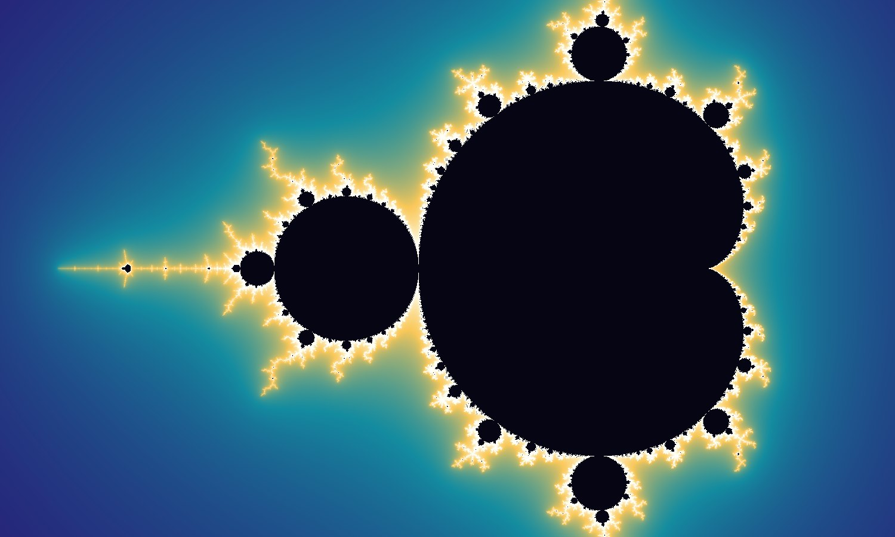

We compute smoothed escape times for the quadratic map on a grid of 1500 × 900 points and use them to colour the plane. The cost grows linearly with the iteration limit, while the visible detail along the boundary saturates once the limit exceeds a few hundred. We describe the algorithm, report timings, and discuss why the boundary resists every attempt at a simple description.
For each complex number we iterate the map above from . The Mandelbrot set consists of those for which the orbit stays bounded. A classical argument shows that once the orbit escapes to infinity, so the number of steps needed to cross this radius is a natural measure of how close is to the set. Plotting this number produces the familiar bands that accumulate around the boundary, shown in Figure 1.

The program evaluates the map for every pixel in lock-step. To avoid the visible banding of integer escape times, the last iteration count is corrected by the logarithm of the final modulus (the “smooth” colouring). The algorithm is short enough to list in full:
for each pixel c in the grid:
z, n = 0, 0
while |z| <= 20 and n < limit:
z = z*z + c
n = n + 1
if n == limit:
colour = inside
else:
t = n + 1 - log2(log|z|);
colour = palette(t)
Table 1 lists the running times on a single core. Doubling the limit doubles the time almost exactly, as Figure 2 shows, because the points inside the set always use every allowed iteration and dominate the total.
| Iteration limit | Time (ms) | Pixels at limit | Share |
|---|---|---|---|
| 50 | 12 | 214 880 | 15.9 % |
| 100 | 19 | 204 310 | 15.1 % |
| 200 | 35 | 199 702 | 14.8 % |
| 400 | 68 | 197 245 | 14.6 % |
| 800 | 131 | 196 120 | 14.5 % |
| 1600 | 262 | 195 530 | 14.5 % |
Table 1. Time and number of points that never escape, for each iteration limit.
Figure 2. Running time in milliseconds against the iteration limit.
The last column of Table 1 decreases only slowly: about one point in seven of the window never escapes, no matter how long we wait. Points that are merely slow to escape are the ones that give the boundary its detail, and the colour bands in Figure 1 show where they accumulate. Raising the limit beyond a few hundred changes few pixels at this resolution; it would matter only under deep magnification, where the structure of the boundary reappears at every scale.
This self-similarity is what makes the set both attractive and hard: its boundary has Hausdorff dimension two, yet it has zero area, so no finite picture can be exact. We have therefore treated the figures as visualisations of escape times, not as claims about the set itself.